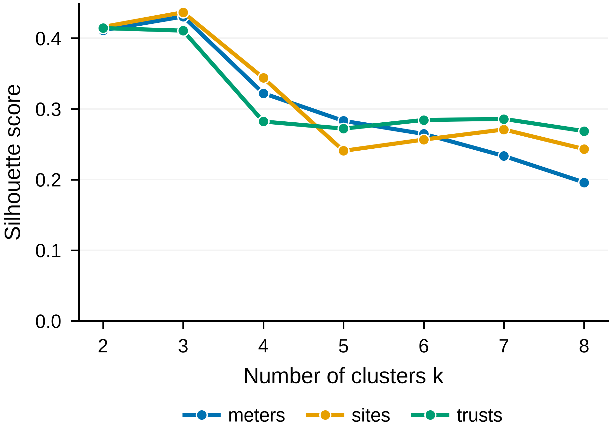
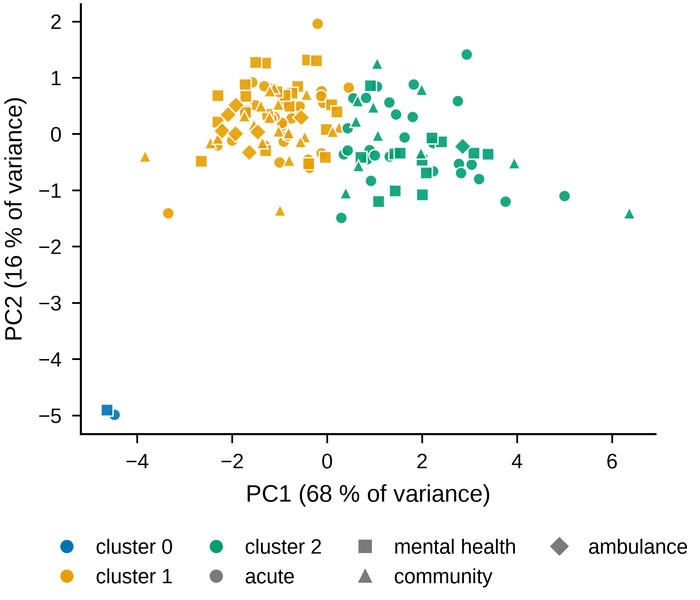
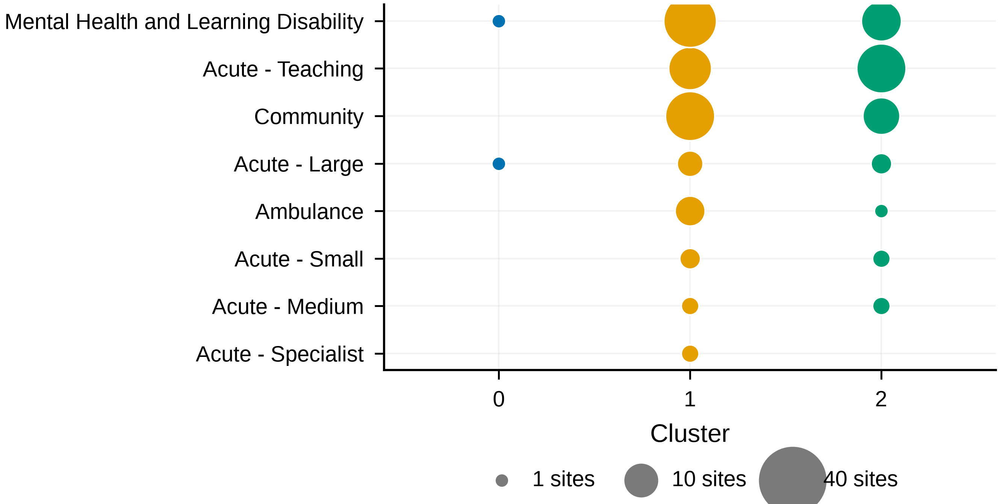
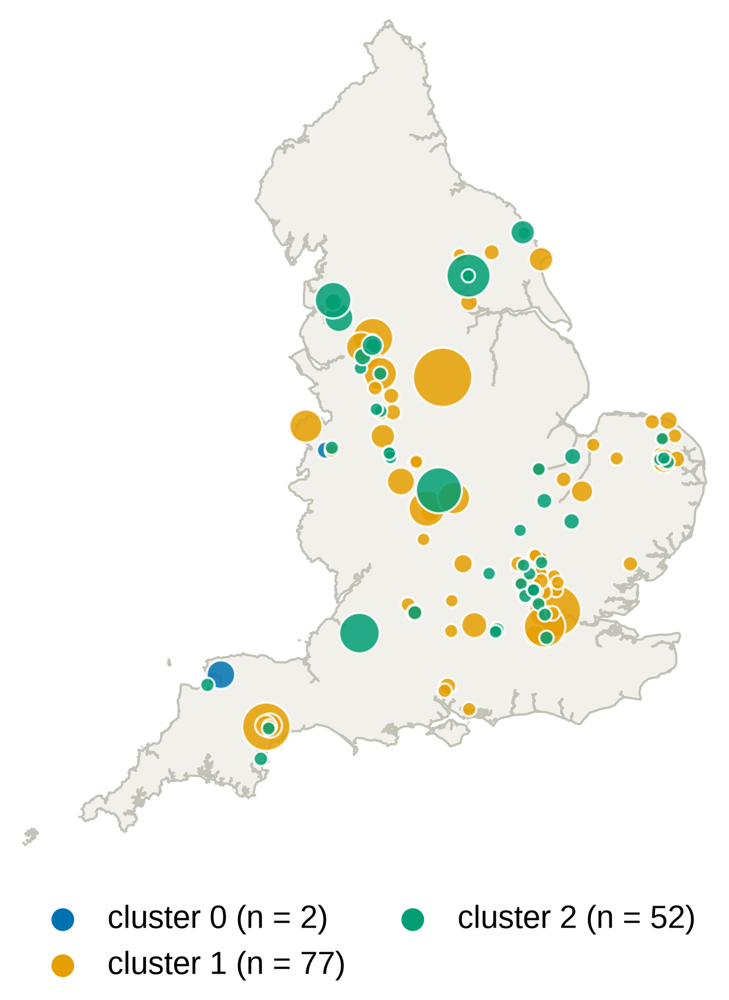
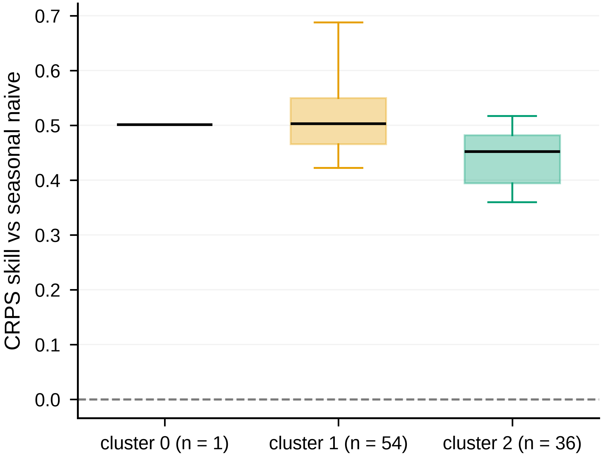
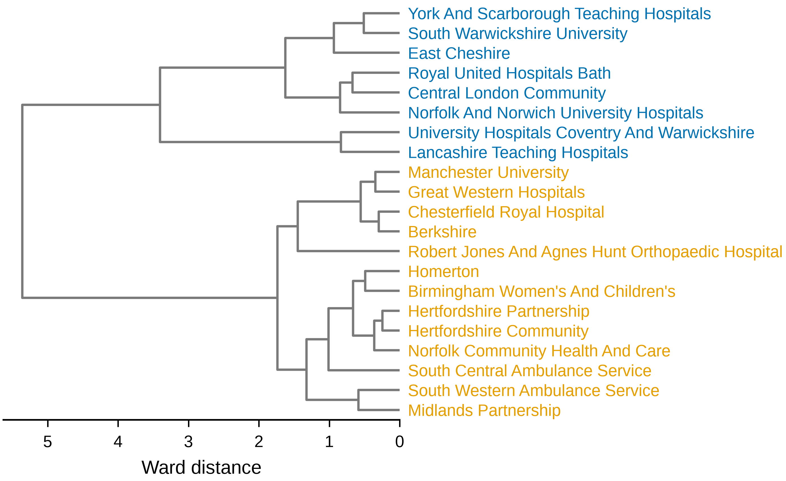
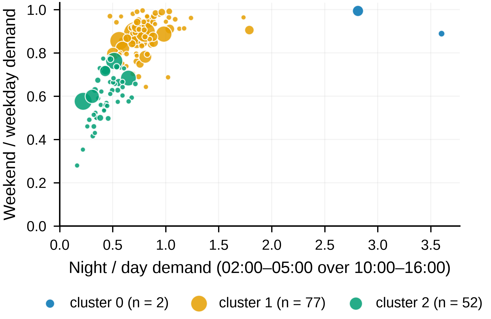

Structure of the demand data: shape clusters of meters, sites and trusts
sense-energy cluster-demand (module code/src/sense_energy/analysis/clustering.py), figures from
code/scripts/clustering/ under code/reports/figures/clustering/, tables under code/reports/clustering/.
15 September 2026.
Method
Each series is described by its shape: the mean daily profile on weekdays and on weekends in local time, normalised by the series mean (96 values). Shapes are clustered with k-means (20 restarts, k = 2–8, k chosen by silhouette, all solutions kept) and with Ward linkage for the dendrogram. Scalar descriptors interpret the clusters: mean demand (kW), night/day ratio (02:00–05:00 over 10:00–16:00), weekend/weekday ratio, winter/summer ratio, temperature slope of the daily demand index (per °C, ERA5 at the site), day-to-day CV and the imputed share. Series need ≥ 120 well-observed days.
Electricity sites (131 series)
Silhouette prefers k = 3 (0.44) because two sites with night-time demand two to three times their daytime
demand (RH880 Royal Devon, RRERS Midlands Partnership; probably storage heating or off-peak plant) split off
first. Among the other 129 sites the informative solution is k = 4 (cluster_profiles_elec_site_k4):
| Cluster (k = 4) | n | Shape | Night/day | Weekend/weekday | Winter/summer | Median kW |
|---|---|---|---|---|---|---|
| 1 | 64 | flat 24/7, daytime rise to ~1.2 | 0.80 | 0.91 | 1.29 | 31 |
| 2 | 44 | moderate daytime peak ~1.6 | 0.55 | 0.72 | 1.20 | 16 |
| 3 | 21 | office-like, ~0.55 at night, ~2.05 by day | 0.34 | 0.50 | 1.16 | 6 |
| 0 | 2 | night-heavy | 2.8–3.6 | 0.94 | 1.04 | 174 |
- Trust type does not determine the shape. Mental-health, acute-teaching and community sites all spread
across the 24/7 and daytime clusters (
cluster_composition_elec_site); what separates them is the site's function: inpatient community hospitals and mixed-service hospitals sit in the 24/7 cluster, administration, treatment centres and outpatient departments in the daytime clusters (site_use_typecross-tab in the clusters table). - Shape follows size. The 24/7 cluster has the largest sites (median 31 kW), the office-like cluster the
smallest (6 kW); night/day and weekend ratios are strongly correlated (
cluster_descriptors_elec_site). - Weather sensitivity is weak everywhere: the temperature slope is −0.01 to −0.02 per °C of the demand index in every cluster, i.e. 1 °C colder adds 1–2 % of demand. This is the electricity-only picture; gas is the heating fuel.
- Forecast skill by cluster (
cluster_skill_elec_site): CRPS skill of Chronos-2 + IFS ENS is similar across the three main clusters; the day-to-day CV (0.20 in the 24/7 cluster, 0.43 in the office-like cluster) is the better predictor of which sites are hard.
Electricity meters (161) and trusts (21)
Meters reproduce the site picture (k = 3, silhouette 0.43; 98 flat, 59 daytime, 4 night-heavy). Trusts split
into two groups (silhouette 0.41): eight with a pronounced daytime/weekday cycle (York and Scarborough,
South Warwickshire, East Cheshire, RUH Bath, Central London Community, Norfolk and Norwich, UHCW, Lancashire
Teaching; night/day 0.61, weekend 0.74) and thirteen with flatter aggregate profiles (night/day 0.80, weekend
0.88). The Ward dendrogram (cluster_dendrogram_elec_trust) shows the same two branches.
Gas (meters 39, sites 9)
Gas meters separate into a large heating-dominated group (35 meters, winter/summer 3.1, temperature slope −0.08 per °C) and four small meters with extreme seasonality (winter/summer 7.5, slope −0.13): heating-only supplies. Only nine gas sites have enough data to cluster; the gas panel is too thin for more.
Figures
cluster_profiles_{elec_site, elec_site_k4, elec_meter, elec_trust, gas_meter, gas_site},
cluster_silhouette_elec, cluster_pca_elec_site, cluster_composition_elec_site, cluster_map_elec_site,
cluster_skill_elec_site, cluster_dendrogram_elec_trust, cluster_descriptors_elec_site. Cluster colours are a
fixed Okabe-Ito sequence (cluster 0 first); cluster ids are ordered by the members' mean size.

cluster_silhouette_elec PDF
cluster_pca_elec_site PDF
cluster_composition_elec_site PDF
cluster_map_elec_site PDF
cluster_skill_elec_site PDF
cluster_dendrogram_elec_trust PDF
cluster_descriptors_elec_site PDFUses
Cluster membership is a site static for the models (a shape label rather than the trust type), a stratifier for reporting skill and covariate gains, and a screen for anomalous supplies (the night-heavy pair).